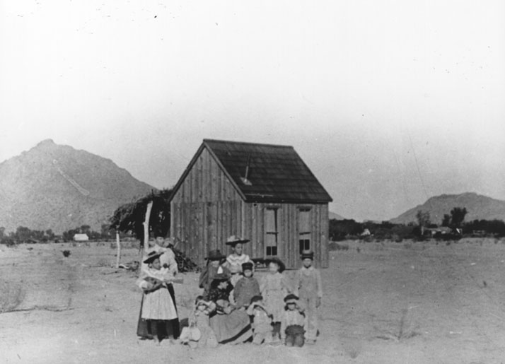
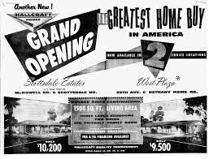

The Story
The history that shaped these streets
Before it was the rooftop pools and gallery walks, Old Town was a $3.50-per-acre homestead, a Western-themed cattle town, and a postwar architectural laboratory. The neighborhood you walk today is layered with all of it.

1888 — 1909
The Founding
Winfield Scott homesteads 640 acres at $3.50 an acre. A newspaper typo turns "Orangedale" into "Scottsdale." The Little Red Schoolhouse goes up in 1909 and still stands today.
1910s — 1940s
The Western Era
Cattle, citrus groves, dude ranches, and the cowboy iconography that still threads through Old Town's brand today. The original Main Street takes shape.

1950s — 1960s
The Hallcraft Years
Hallcraft Homes, Ralph Haver, and Fred Woodworth define the postwar Old Town single-family experience. These are the homes today's buyers fight over and renovate with reverence.
1970s — 1990s
The Arts District Era
Fifth Avenue shops, the gallery scene takes off, and the rodeo culture cements as part of the local identity. The bones of today's walkable downtown form here.

2000s — 2010s
The Reinvention
Optima rises. The W Hotel arrives. Old Town becomes a nightlife destination and the entertainment district that out-of-towners come for and locals navigate around.
2020s — Now
The Now
The condo boom matures. The STR economy reshapes ownership. The new Civic Center reopens. Old Town is being rewritten in real time — we cover it weekly on the blog.